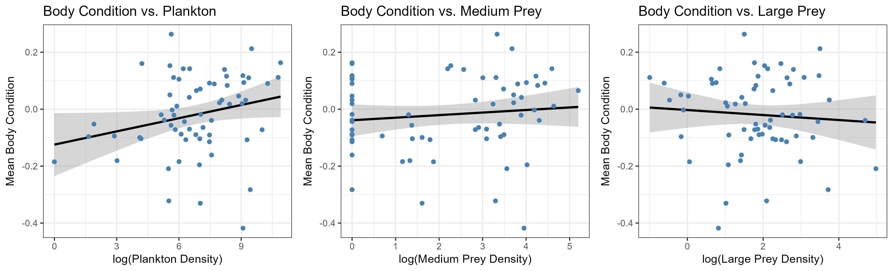

Too many larvae or not enough food?
The effects of density and prey availability on body condition in Santa Cruz Long-toed Salamanders
Introduction
The Santa Cruz Long-toed salamander (Ambystoma macrodactylum croceum; hereafter SCLTS) is a federally endangered pond-breeding amphibian endemic to Santa Cruz and Monterey Counties in California, USA. These salamanders have a biphasic life-cycle. The first few months of their lives are spent as fully aquatic larvae, and they metamorphose into terrestrial juveniles and leave their ponds during the summer months. After their discovery in 1956, SCLTS were quickly recognized as unique, given that the subspecies is located over 200 kilometers from the rest of the long-toed salamander range in the Pacific Northwest (Russel and Anderson, 1956). Because the entire range is just a portion of two counties, and agriculture and urbanization have modified and fragmented the landscape within their limited extent, SCLTS are vulnerable to extinction. Despite their listing in the inaugural group of protected organisms under the Endangered Species Preservation Act in 1967, there is a dearth of literature on their ecology, leaving wide gaps in knowledge that need to be filled to understand the stressors that are contributing most to their decline and to make informed decisions on management strategies. Additionally, work on non-endangered subspecies of long-toed salamanders may not provide sufficient information for SCLTS conservation, as SCLTS have a distinct life history, unique microhabitat preferences, and different dietary habits than the other subspecies (Anderson 1967; Anderson 1968).
Recent work by the Conservation Ecology Lab at the University of Miami has shed light on the terrestrial needs of juvenile SCLTS and how the aquatic habitat shapes annual recruitment (Stemle et al., 2025a; Stemle et al., 2025b; O’Brien et al., in prep). O’Brien et al. (in prep) used densities of late stage aquatic larvae as a metric of recruitment. While this approach appears to be valid for measuring new juveniles entering the terrestrial population, it overlooks an important component of recruitment: survival to adulthood. It is important that we create habitat for endangered species that produces large numbers of recruits, but it is also important that those recruits be healthy, as large numbers of unhealthy recruits may not actually represent greater addition of adults to a population. In this study, I attempt to reconcile this gap by examining how aquatic habitat conditions such as density and prey abundance influence the body conditions of larval SCLTS.
We also collected morphometric data on a subsample of larvae collected at each pond, which may allow us to examine the effect of the aquatic environment on not just recruitment but the health of recruits. It is possible that ponds are producing large numbers of recruits but that many of those recruits are in poor health and are less likely to survive to adulthood.
Objectives
In this project, I aim to address two questions:
1) Do higher densities of SCLTS larvae result in lower larval body condition?
2) How does prey abundance influence larval body condition?
I hypothesize that higher densities of larvae and lower densities of prey will result in increased stress and intraspecific competition, which will create worse larval body conditions.
Data Sources
Study Area
SCLTS breed in ~40 ponds across Santa Cruz and Monterey Counties, CA, USA. SCLTS breeding ponds have a wide variety of hydrologies ranging from permanent water bodies fed by groundwater to rain-filled ephemeral pools. These ponds are a mix of artificial and natural sites, though many of the natural ponds have also been modified by humans (U.S. Fish and Wildlife Service, 2019). The region’s Mediterranean climate, characterized by dry summers and wet winters, affects the number of ponds available to SCLTS each year, as interannual rainfall variation can influence the availability of rain-filled ephemeral ponds. The terrestrial landscape is highly developed, and all known breeding ponds are located near high traffic volume roads, agricultural land, or both (Stemle et al., 2025a).
Data Collection
Between 2021 and 2024, we accessed 51 ponds (Figure 1) spanning the extent of the known SCLTS range and conducted 144 total surveys (one to four per pond) to characterize the aquatic habitat best suited for SCLTS recruitment. We conducted our surveys in late May of each year. SCLTS breeding occurs during winter rain events, so our surveys were timed to capture larvae after they have gone through a substantial amount of post-hatching mortality but before any of them have metamorphosed, allowing for a more accurate estimate of recruitment.
Figure 1. Map of the study area. This shows every pond surveyed between 2021 and 2024 and highlights ponds where SCLTS breeding was detected.
We measured the biotic community and SCLTS density in each pond. Plankton are an important component of the SCLTS larval diet (Anderson, 1968). We conducted four 2-m plankton tows (17 cm diameter; 153-μm mesh) at each site and stored the samples in ethanol. We subsampled the plankton by homogenizing each sample and haphazardly selected one third of the volume. We then examined the sub-sample under a Zeiss Stemi 508 dissecting microscope, counted and classified the plankton into the two major groups (Copepoda and Cladocera) found at the sites, and counted the number of chironomids, ghost midges, and amphipods. To sample macroinvertebrate and vertebrate communities, we conducted two types of density surveys. At ponds where the vegetative structure allowed for seining, we conducted four 5-m seine hauls (0.3 cm mesh) with a and then categorized and counted all macroscopic organisms found. Some of the surveyed ponds were difficult to seine effectively, so at these we conducted 50 1-m dipnet sweeps dispersed evenly throughout the pond and identified and counted all macroscopic organisms found in these sweeps. We classified prey into three categories. Plankton included all copepods and cladocera found in plankton tows. Medium prey included chironomids, ghost midges, and amphipods found in plankton tows. Large prey included chorus frog tadpoles, planorbid snails, physid snails, water boatmen, and backswimmers found in density dipnet surveys.
Once these density surveys measuring the entire biotic community were complete, we conducted a minimum of 40 m2 of additional dipnet sweeps and seine surveys (referred to as larval dipnets or larval seines) to specifically search for SCLTS larvae, unless 25 larvae were captured before reaching that number. We kept a count of the number and length of all seine hauls and the number of 1-m dipnet sweeps in order to accurately measure the density of larvae in each pond. We measured the snout-to-vent length (SVL), total length, and mass of all captured SCLTS larvae and noted if there were any signs of metamorphosis. We calculated SCLTS larval density at each pond by first calculating the SCLTS larval density obtained through each survey method (density dipnet, density seine, larval dipnet, or larval seine). We then divided the total number of salamander larvae captured by the total pond area sampled to estimate the larval SCLTS density at each pond.
Data Processing
To evaluate the effect of density and prey abundance on larval SCLTS body condition, I filtered the survey dataset to include only ponds with SCLTS detections, as those are the only surveys with body condition data. This sample included 64 surveys from the initial 144. I then joined the morphometric data with the filtered density and prey abundance data.
I calculated body condition by constructing a linear model relating larvae SVL to mass. The residuals of this model served as a metric of overall condition, with more positive values representing greater body condition. I calculated the mean body condition for each pond survey and then constructed linear models relating plankton abundance, medium prey abundance, and large prey abundance to larval body condition by pond. I also created a generalized additive model relating larval density to body condition, due to the appearance of a non-linear relationship between these two variables.
Main Findings
We detected no significant effect of larval density on SCLTS body condition (Figure 2). This result suggests that my earlier work treating larval density as a proxy of recruitment is probably not confounded by the body condition of larvae, since higher density ponds actually mostly seem to have comparable or slightly better body conditions than low density ponds.

Figure 2. Generalized additive model relating log-larval SCLTS density to mean larval body condition. There is a gradual but ultimately insignificant increase in body condition as larval density increases.
Medium prey and large prey also showed no significant effect on SCLTS larval body condition (Figure 3). Plankton abundance had a marginally significant positive effect on body condition (p = 0.05; Figure 3).

Figure 3. Linear relationships between three categories of prey and larval SCLTS body condition. Higher abundances of plankton are marginally significantly related to higher SCLTS body condition. Medium prey and large prey abundance are not significantly associated with SCLTS body condition.
Overall, these results suggest that there is much work to be done in understanding what influences SCLTS larval body condition, but this work provides evidence that may inform next steps. The marginally significant plankton result suggests that some prey may be limiting for larval health, but more data collected as part of a long-term study or a laboratory experiment will be needed to further characterize this relationship. Additionally, my finding that larval density is not related to body condition is important, since researchers frequently assume density-dependence in populations of amphibian larvae.
References
Anderson, J.D., 1967. A Comparison of the Life Histories of Coastal and Montane Populations of Ambystoma macrodactylum in California. The American Midland Naturalist 77, 323–355.
Anderson, J.D., 1968. A Comparison of the Food Habits of Ambystoma macrodactylum sigillatum, Ambystoma macrodactylum croceum, and Ambystoma tigrinum californiense. Herpetologica 24, 273–284.
Russell, R.W., Anderson, J.D., 1956. A Disjunct Population of the Long-Nosed Salamander from the Coast of California. Herpetologica 12, 137–140.
Stemle, L.R., Laabs, D., Searcy, C.A., 2025a. Land use change, fragmentation, and sea level rise create escalating viability concerns for an imperiled salamander. Ecosphere 16, e70284.
Stemle, L.R., A.F. Messerman, A.E. O’Brien, and C. A. Searcy. 2025b. Blazing a trail: analyzing imperiled salamander movement, emergence patterns, and habitat preferences in terrestrial uplands. Herpetologica.
U.S. Fish and Wildlife Service. 2019. Santa Cruz long-toed salamander (Ambystoma macrodactylum croceum) 5 Year Review: Summary and Evaluation. U.S. Fish and Wildlife Service, Ventura Fish and Wildlife Office, Ventura, California.